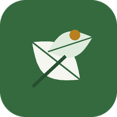

Datenschutz / Privacy
Deutsch · English · Zur App / To the app
Datenschutzerklärung
Mein Garten ist eine private Web-App für die Gartenpflege, betrieben von Keywan Riahi für den eigenen Haushalt und eingeladene Mitnutzende. Die App hat keinen eigenen Server, keine Werbung und kein Tracking.
Welche Daten die App verarbeitet
- Gartendaten, die Sie selbst eingeben: Pflanzen, Aufgaben, Notizen, Fotos.
- Beim Verbinden mit Google Drive: ein Zugriffstoken von Google, das nur für die laufende Sitzung im Browser gespeichert wird (etwa eine Stunde).
Wo die Daten liegen
- Auf Ihrem Gerät: im Speicher des Browsers (IndexedDB, localStorage). So funktioniert die App auch offline.
- In Google Drive: nur wenn Sie die Synchronisation einschalten. Die App speichert dann eine Datendatei, eine KI-Akte (ohne Fotos) und die Fotos im Ordner "Garten-Manager". Dieser Ordner kann mit weiteren Personen geteilt sein; wer Zugriff hat, sieht dieselben Daten.
Zugriff auf Google Drive
Die App fragt die Berechtigung für Google Drive an (Lesen und Schreiben). Diese breite Berechtigung ist nötig, weil ein Ordner, den eine andere Person mit Ihnen geteilt hat, sonst nicht beschrieben werden kann. Die App öffnet und verändert nur den Garten-Manager-Ordner und die Dateien darin. Andere Dateien in Ihrem Drive liest sie nicht. Die Daten werden direkt zwischen Ihrem Browser und Google übertragen, ohne Zwischenserver. Die Nutzung von Google-Daten entspricht der Google API Services User Data Policy, einschließlich der Anforderungen zur eingeschränkten Nutzung (Limited Use).
KI-Auswertung
Der Betreiber lässt den Inhalt des geteilten Garten-Manager-Ordners (Pflanzendaten und Fotos) regelmäßig von Claude (Anthropic) auswerten, um Pflegehinweise zu erstellen. Die Ergebnisse erscheinen in der App unter "KI-Diagnose". Die App selbst sendet keine Daten an einen KI-Dienst.
Weitergabe
Daten werden nicht verkauft und nicht an Dritte weitergegeben, außer an die oben genannten Dienste (Google für Anmeldung und Speicherung, Anthropic für die KI-Auswertung). Die App wird über GitHub Pages ausgeliefert; GitHub kann dabei technische Zugriffsdaten wie die IP-Adresse protokollieren.
Löschen und Widerruf
- Lokale Daten löschen Sie über die Website-Daten Ihres Browsers oder indem Sie die App vom Home-Bildschirm entfernen.
- Den Zugriff auf Google Drive widerrufen Sie jederzeit unter myaccount.google.com/permissions.
- Dateien in Google Drive löschen Sie direkt in Drive, oder Sie bitten den Betreiber darum.
Kontakt
Keywan Riahi · keywan.riahi@gmail.com
Privacy Policy
Mein Garten is a private garden-care web app, run by Keywan Riahi for his own household and invited co-users. The app has no server of its own, no advertising and no tracking.
What data the app handles
- Garden data you enter yourself: plants, tasks, notes, photos.
- When you connect Google Drive: an access token from Google, kept in the browser for the current session only (about one hour).
Where the data is stored
- On your device: in the browser's storage (IndexedDB, localStorage), so the app also works offline.
- In Google Drive: only if you turn on sync. The app then stores a data file, an AI dossier (without photos) and the photos in the "Garten-Manager" folder. That folder may be shared with other people; everyone with access sees the same data.
Google Drive access
The app requests Google Drive permission (read and write). This broad permission is needed because a folder another person has shared with you cannot otherwise be written to. The app only opens and changes the Garten-Manager folder and the files in it. It does not read other files in your Drive. Data travels directly between your browser and Google, with no server in between. The app's use of information received from Google APIs adheres to the Google API Services User Data Policy, including the Limited Use requirements.
AI analysis
The operator has the contents of the shared Garten-Manager folder (plant data and photos) analysed regularly by Claude (Anthropic) to produce care advice. The results appear in the app under "KI-Diagnose". The app itself sends no data to any AI service.
Sharing
Data is not sold and not passed to third parties, except the services named above (Google for sign-in and storage, Anthropic for the AI analysis). The app is served from GitHub Pages; GitHub may log technical access data such as IP addresses.
Deletion and revoking access
- Delete local data by clearing the site data in your browser or removing the app from your home screen.
- Revoke Google Drive access at any time at myaccount.google.com/permissions.
- Delete files in Google Drive directly in Drive, or ask the operator to do so.
Contact
Keywan Riahi · keywan.riahi@gmail.com